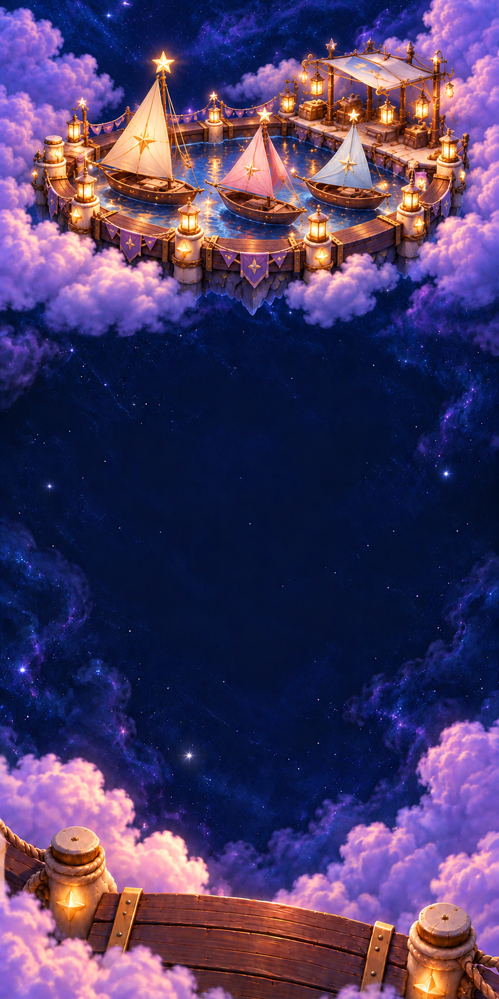

Starfall · Soft Skies / 03
Playfield composition study Existing crystal bodies · Illustrated setting

Artwork for this view and state has not been packaged yet. The fixed cast overlay remains available for geometry review.